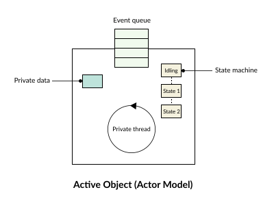
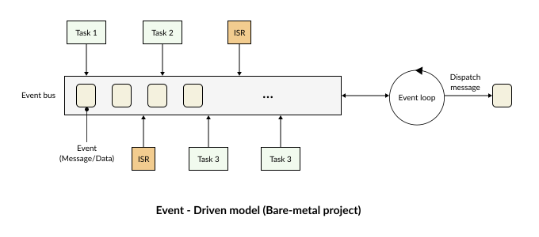
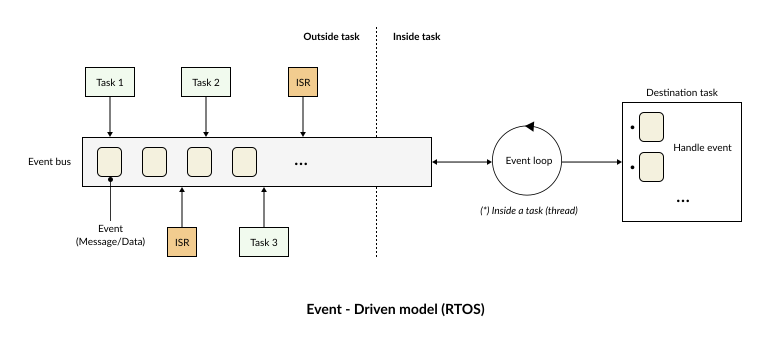

Event - Driven
RK integrates a built-in inter-task communication system based on the Event-Driven model.
Instead of tasks constantly polling each other’s status or checking shared variables, each task communicates by sending and receiving messages. When an event occurs, a message is generated and sent to the destination task to request the execution of the corresponding operation.
This model provides several key benefits:
Reduces dependency (coupling) between tasks.
Eliminates continuous polling mechanisms, preventing CPU resource waste.
Makes the system easy to scale and maintain.
Improves the responsiveness of the application.
The Event-Driven model in RK is heavily based on the concepts of the Active Object model (https://www.state-machine.com/active-object).
{kind=link}

Each task (thread) possesses its own dedicated storage space for its local events, states, and data—remaining completely isolated and independent from other tasks in the system.
The Event-Driven system in RK is a unified synergy of three core components:
Task
Mailbox
Message
The Event system consists of two primary mechanisms:
Event Bus: The intermediary layer responsible for publishing and receiving messages (messages originating from ISRs or other tasks).
Event Loop: The processing engine that dispatches incoming messages to their respective destination handlers.
Bare-metal Project
In a pure super loop system, it is entirely possible to implement an event-driven architecture as follows:
{kind=link}

All messages are centrally aggregated and stored in a shared global Event Queue. The centralized Event Loop continuously extracts messages from this queue and dispatches them to the target task. Each destination task then processes the event based on the specific event ID it has been assigned.
RTOS
Within an RTOS environment, the Event-Driven architecture still adheres to the core concepts mentioned above:
{kind=link}

However, the key distinction lies in isolation: each task maintains its own independent Event Queue and Event Loop.
Every single object (Queue, Event Loop, Message) is instantiated and managed within the dedicated, isolated memory space allocated to that specific task.